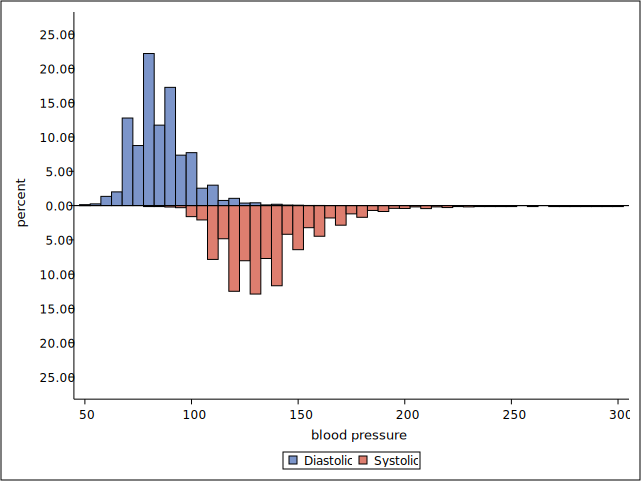

Mirrored Histogram¶
What’s this?¶
Macro for Mirrored histogram using SAS GRAPH.
Mirrored histogram shows the distribution of response variable two groups. Histogram of the group which level is 2 will be inverted.
Input data¶
Input data must be pre-summarized data. To summarize raw data, proc univariate is useful. required variable is described below.
key |
variable |
type |
1 |
group |
numeric |
2 |
level |
numeric |
response |
numeric |
group variable must be two level, 1 or 2.
I recommended that format is applied to group variable.
Syntax¶
before use this macro, macro file described below is loaded by %include statement.
mirrored_histogram.sas
and macro file described below must be placed in the directory of mirrored_histogram.sas.
generate_ytick.sas
ods graphics / < graphics option > ; ods listing gpath=< output path >; %MirroredHist( data=, group=, x=, y=, xticks=None, yticks=, xaxistype=discrete, xlabel=x, ylabel=y, tickfmt=09.9, orient=v, legend=true, barwidth=1, ymargin=1.1, outline=true )
Parameters¶
data : dataset name (required)
input data. keep, rename and where options are available.
group : variable name (required)
group variable. number of groups must be two.
x : variable name (required)
level variable or midpoint of bins
y : variable name (required)
response variable
xticks : numeric list (optional)
tickvalue list of level axis. the list is set as the numeric list separated by space . the item of the list should be set ascending order.
ex. xticks = 0.25 0.5 0.75 1,
if this parameter is “none”, tick list will be generated automatically. default is “none”.
yticks : numeric list (required)
tickvalue list of response axis. the list is set as the numeric list separated by space and numeric must be positive. if zero is not contained in the list, the macro will be insert “0” into the list.
ex. yticks = 0.1 0.2 0.3,
xaxistype : discrete or linear (optional)
axis type of level axis. if level variable is continuous, “linear” is recommended. defalut is “discrete”.
xlabel : string (optional)
label string of category axis. default is “x”. when the label is not displayed , set like below.
xlabel=,
ylabel : string (optional)
optional. label string of response axis. default is “y”. when the label is not displayed , set like below.
ylabel=,
ytickfmt : string (optional)
tick value format of response axis. this is picture format. for more detail, see SAS help of picture format. default is “09.9” (ticks will be displayed first decimal place).
orient : v or h (optional)
Orientation of the plot (vertical or horizontal).
default is “v”.
legend : bool (optional)
if “True” , legend of group item is displayed. default is “True”.
barwidth : numeric (0 to 1) (optional)
width of bar. if “1”, no gaps between the bars. default is “1”.
ymargin : numeric (greater than 1) (optional)
margin factor of response axis. default is “1.1”.
outline : bool (optional)
display setting of bar outline. default is “True”.
example¶
vertical histogram¶
code
%inc "mirrored_histogram.sas";
ods select histogram;
proc univariate data=sashelp.heart;
var diastolic systolic;
histogram diastolic systolic /
outhistogram=histo
vscale=percent
midpoints=50 to 400 by 5;
run;
proc format;
value catf
1="Diastolic"
2="Systolic";
run;
data graph_data;
set histo;
if _VAR_="Diastolic" then cat=1;
if _VAR_="Systolic" then cat=2;
format cat catf.;
keep cat _midpt_ _obspct_;
run;
%mirroredhist(
data=graph_data,
group=cat,
x=_midpt_,
y=_obspct_,
xaxistype=linear,
xticks=%str(50 100 150 200 250 300),
yticks=%str(5 10 15 20 25),
xlabel=blood pressure,
ylabel=percent
);

when ytickfmt paramater is set “09.99”, percent ticks will be displayed at second decimal place.
horizontal histogram¶
when orient parameter is set “h”, histogram is displayed in horizontal Orientation.The plot is also called “Butterfly chart”. (x: response, y=level)
if xaxistype parameter is “discrete”, y-axis will be reversed.
code
%mirroredhist(
data=graph_data,
group=cat,
x=_midpt_,
y=_obspct_,
xaxistype=linear,
xticks=%str(50 100 150 200 250 300),
yticks=%str(5 10 15 20 25),
xlabel=blood pressure,
ylabel=percent,
orient=h
);

when outline parameter is set “false”, the outline of barchart will not be displayed except for zero line.
code
%mirroredhist(
data=graph_data,
group=cat,
x=_midpt_,
y=_obspct_,
xaxistype=linear,
xticks=%str(50 100 150 200 250 300),
yticks=%str(5 10 15 20 25),
xlabel=blood pressure,
ylabel=percent,
orient=h,
outline=false
);